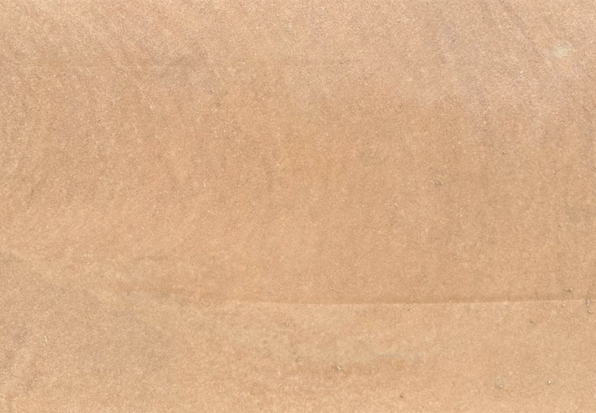
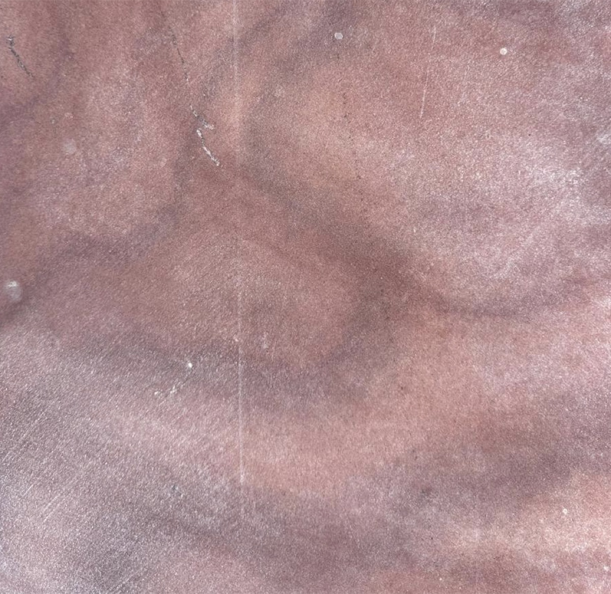
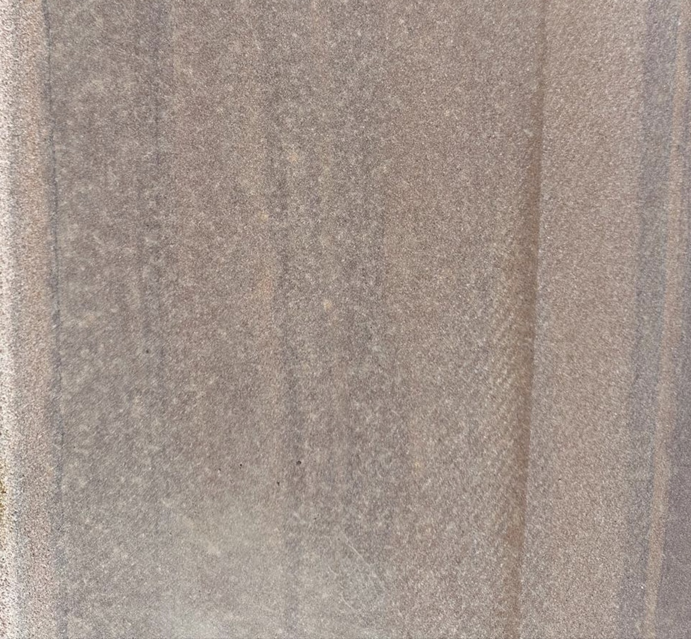
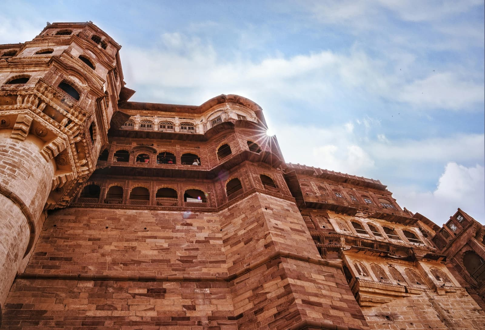
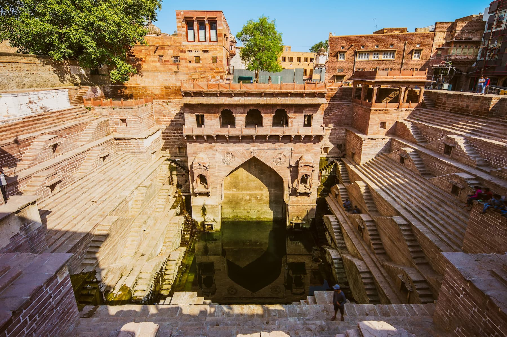
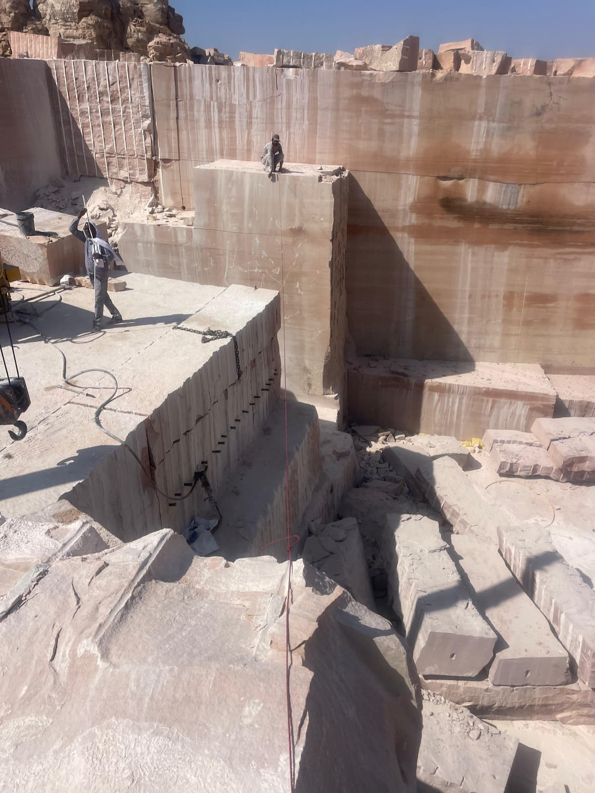
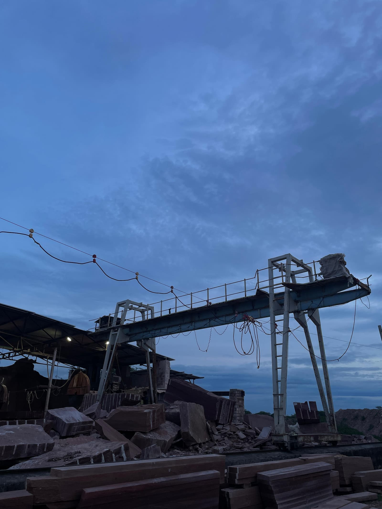
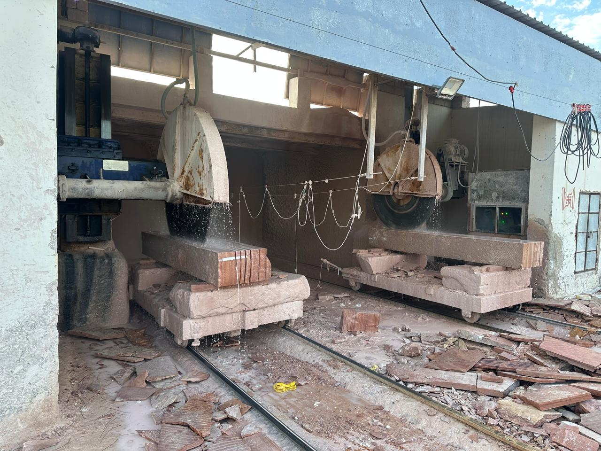

Direct sourcing, in-house processing, and controlled delivery from a single origin.
Umaid Bhawan Palace · Cinematic reveal
N.S. Stone
Premium Chittar sandstone for architectural projects.
Visual representation of natural stone appearance.
A material with memory
Chosen for character, specified for performance, and trusted by architects who build to last.
Chittar sandstone is not a commodity. It carries the visual memory of Rajasthan's great forts and palaces — and the same qualities that built them make it the right choice for demanding contemporary projects.
N.S. Stone supplies directly from quarry to international project site, with complete control over material selection, finishing, and export logistics. No intermediaries. No compromise on quality.
Proven across centuries of outdoor use and the world's most demanding climates.
Export-ready supply with international standards for packaging, sizing, and documentation.
The collection
Three tonal families. One coherent material language.
Each variety is custom cut and finished to exact project intent — understood by the atmosphere it creates, not by commodity description.

White / Pink
Lighter palettes. Quieter elegance.
The most refined expression of Chittar sandstone — defined by tonal clarity, architectural restraint, and quiet luxury. Designed for contemporary spaces and high-end applications.
- Facades
- Pool decks
- Terraces
- Landscape design

Red
Depth, warmth, and historic permanence.
The most assertive of the three — chosen for projects that want visual weight, historic reference, and a stone identity that endures.
- Cladding
- Commercial fronts
- Structural expression
- Heritage-inspired design

Brown
Earth-toned. Naturally at home outdoors.
Premium without being forced. A grounded character that belongs in landscape design, resort architecture, and open-air living spaces.
- Garden paths
- Patios
- Villas
- Resort courtyards
Stone in architecture
Sixteen centuries of proof.
These monuments are not displayed as decoration. They are presented as evidence — of scale, of endurance, and of the architectural character this stone has held since the fourth century.


From quarry to finish
The quality is controlled before it reaches you.
What makes a premium stone supply reliable is what happens before installation. Every block is selected, processed, and finished with the final application in mind — never as a generic catalogue output.
Material selected directly from our quarries for tone, integrity, and application suitability.
Every order is custom cut and surface-finished — honed, natural, polished, or sandblasted — to exact project specification.
Packaged and documented for international export, with reliable logistics and clear communication at every stage.




Three generations
Built on a founder's values. Carried into a global chapter.
N.S. Stone traces its foundation to Late Shri Nain Sukh Bhati — a karmayogi who began as a carpenter and built, through sheer integrity and effort, a business that continues to reflect everything he stood for.
His legacy is carried forward today by Chandrasingh Bhati and Karan Singh Bhati, with a clear direction: premium stone, international supply, and a name that buyers can depend on.
Foundation
Nain Sukh Bhati
Stewardship
Chandrasingh Bhati
Present direction
Karan Singh Bhati
International enquiries welcome